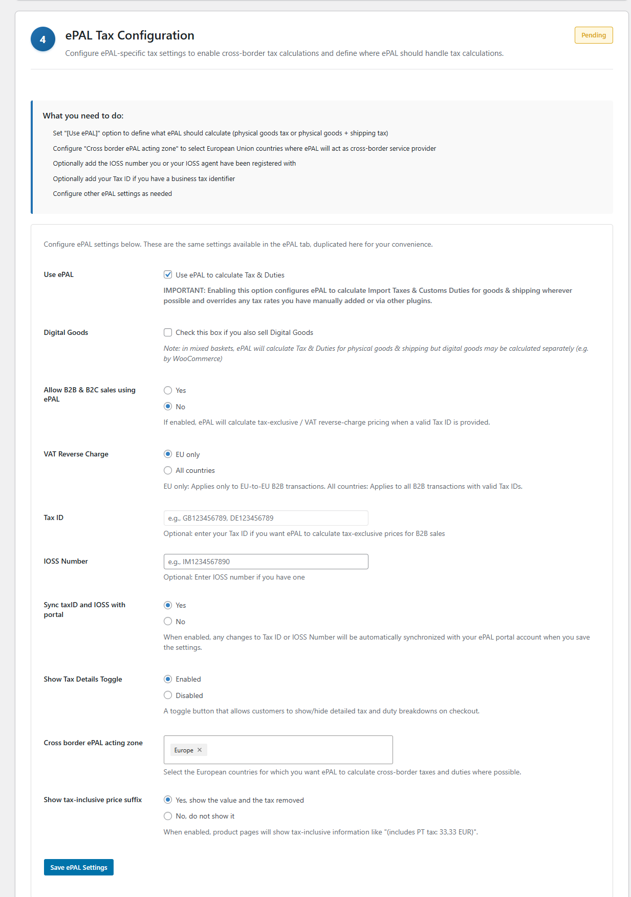

ePAL Tax Configuration UI
Use this UI to manage all your ePAL settings.
You can access this UI in step 4 of the guided installation.

You can also access it by going to
Fields
The following table lists the fileds in this UI:
| Field | Description |
|---|---|
| Use ePAL |
CAUTION:
Enabling this setting
permits ePAL to change your tax and shipping totals wherever
applicable. To enable ePAL and permit it to process your transactions, you need to select this checkbox |
| Digital Goods | If you sell digital goods, select this checkbox. ePAL is not used for these goods. This setting helps it process mixed baskets. |
| Allow B2B & B2C sales using ePAL |
If you want to use ePAL for B2B transactions, click Yes. For more information, see B2B and Tax ID Validation. |
| VAT Reverse Charge | A VAT reverse charged can be applied for B2B transactions. You can choose whether this should apply only in the EU, between EU-based businesses or the entire world. |
| Tax ID | You can specify your Tax ID. For example, your VAT ID. For more information, see B2B and Tax ID Validation. |
| IOSS Number | Specify your IOSS number, if applicable. For more information, see LINK. |
| Sync taxid and IOSS with portal |
If you click Yes, changes made to your Tax ID or IOSS number in Woo Commerce or on the ePAL portal are synchronized so both use the updated information. If you click No, changes are not synchronized. |
| Show Tax Details Toggle | Use this setting to enable or remove the Show Tax Details toggle on your checkout. Customers can use this to get more information about the taxes and duties that ePAL helps calculate. |
| Cross border ePAL acting zone | This setting goeverns the countries in which ePAL is enabled. To specify for all of Europe, choose Europe or you can enter individual countries and regions. |
| Show tax-inclusive price suffix | When enabled, information about tax is displayed in the suffix of tax inclusive prices. |